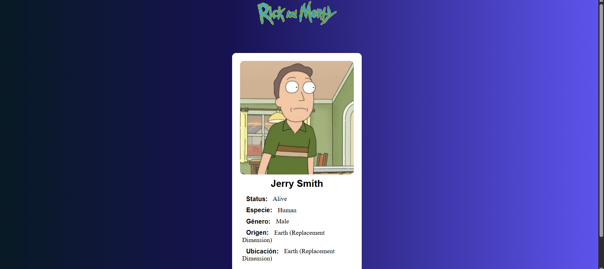
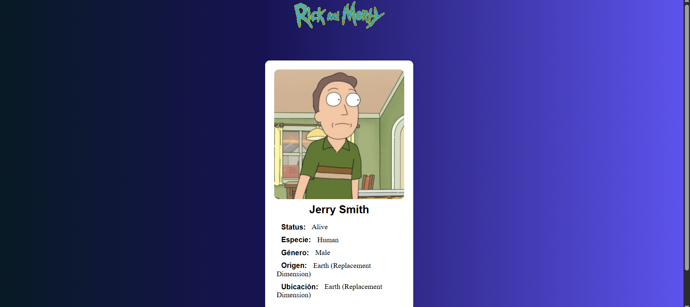

Proyectos
The King Tiger
e-commerce
Desarrollé una aplicación web completa que integra el front-end, el back-end y la base de datos para garantizar la persistencia de la información. Utilicé tecnologías como Java, Spring Boot, MySQL, HTML, CSS y JavaScript, trabajando en conjunto con un equipo multidisciplinario bajo la metodología ágil SCRUM.

Gestor de Clientes
Interfaz
Realicé el proyecto de creación de un sistema gestor de clientes desarrollado con Python y su biblioteca estándar Tkinter, para manipular datos mediante instrucciones de creación, edición y eliminación en archivos CSV.
 

Buscador de personajes Rick & Morty
Consumo de API
Desarrollé una página que consume la API de Rick & Morty, devuelve la información en tarjetas y permite la búsqueda de un personaje en específico utilizando HTML, CSS, Bootstrap y JavaScript.
Desarrollo de Periferia Descentralizada
Sistema de automatización
Construí un módulo de periferia descentralizada, desarrollado desde la parte de diseño, programación, simulación, pruebas y documentación para el control y automatización con PLC SIEMENS de motores de corriente alterna, manejo de señales y protocolos de comunicación industriales EtherCAT y Profinet.
Robot seguidor de línea
Concurso
Desarrollé el diseño, simulación, armado, pruebas y puesta en marcha de un robot seguidor de línea para competir. Este robot fue armado con circuitos lógicos, sensores y componentes electrónicos calculados para el correcto funcionamiento.